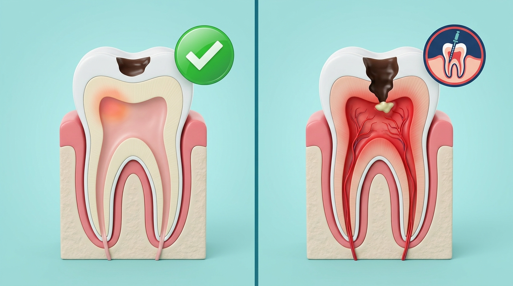

NT-02: Viêm tủy hồi phục và không hồi phục: Cơ chế bệnh sinh, dấu hiệu và quyết định điều trị

Nếu phải chọn một ranh giới quan trọng nhất trong suốt cuộc đời của một chiếc răng, thì đó chính là ranh giới giữa viêm tủy có hồi phục (Reversible Pulpitis) và viêm tủy không hồi phục (Irreversible Pulpitis). Một bên là cơ hội vàng để cứu sống tủy răng bằng các kỹ thuật bảo tồn tối thiểu; bên còn lại buộc phải điều trị nội nha (lấy tủy) để chấm dứt cơn đau và ngăn nhiễm trùng lan xuống xương hàm. Hiểu rõ cơ chế sinh học của hai trạng thái này giúp cả bác sĩ lẫn người bệnh đưa ra quyết định điều trị sáng suốt, tránh cả hai thái cực: trì hoãn quá muộn hoặc lấy tủy quá sớm.
1. Cơ chế bệnh sinh: Cuộc chiến bên trong "căn phòng cứng"
Tủy răng là một mô liên kết mềm giàu mạch máu và dây thần kinh, nhưng lại nằm trọn trong một buồng cứng không thể giãn nở bởi men và ngà răng. Chính đặc điểm giải phẫu "buồng kín ít giãn nở" (low-compliance environment) này quyết định số phận của tủy khi bị viêm:
- Giai đoạn Viêm tủy có hồi phục: Khi vi khuẩn từ lỗ sâu, đường nứt hoặc kích thích nhiệt – hóa học mới tác động qua các ống ngà, mạch máu tủy giãn nhẹ (sung huyết), tăng tính thấm thành mạch để đưa tế bào miễn dịch đến chống đỡ. Lúc này, hệ thống dẫn lưu bạch huyết và tĩnh mạch của tủy vẫn kiểm soát được áp lực nội tủy. Nếu loại bỏ kịp thời tác nhân kích thích và che phủ sinh học, phản ứng viêm dịu xuống và các nguyên bào ngà sẽ tạo ra lớp ngà sửa chữa bảo vệ tủy.
- Giai đoạn Viêm tủy không hồi phục: Khi vi khuẩn xâm nhập ồ ạt hoặc kích thích kéo dài không được xử trí, dịch rỉ viêm tích tụ nhanh khiến áp lực bên trong buồng tủy tăng vọt. Các mạch máu tĩnh mạch ở vùng chóp bị chèn ép dẫn đến ứ trệ tuần hoàn, thiếu máu cục bộ và hình thành các ổ vi áp-xe rải rác trong mô tủy. Một phần mô tủy bắt đầu hoại tử lỏng, giải phóng các chất trung gian gây viêm (prostaglandin, bradykinin, chất P) kích thích liên tục các sợi thần kinh C không có bao myelin. Ở giai đoạn này, tủy không còn khả năng tự phục hồi chỉ bằng cách trám thông thường.
2. Dấu hiệu lâm sàng phân biệt hai trạng thái
Việc phân biệt trên lâm sàng dựa vào tổng hòa triệu chứng cơ năng và đáp ứng nghiệm pháp:
| Tiêu chí | Viêm tủy có hồi phục | Viêm tủy không hồi phục |
|---|---|---|
| Tính chất cơn đau | Đau buốt nhanh khi có kích thích (lạnh, ngọt, chua, gió). | Đau tự phát, đau âm ỉ kéo dài hoặc từng cơn dữ dội, thường tăng về đêm. |
| Thời gian kéo dài sau khi bỏ kích thích | Hết ngay sau 1–2 giây khi súc miệng hoặc hết kích thích. | Kéo dài trên 10–30 giây, thậm chí hàng giờ sau khi bỏ lạnh/nóng. |
| Đáp ứng với nhiệt nóng | Ít nhạy cảm hơn so với lạnh. | Đau tăng vọt khi gặp nóng, đôi khi chườm lạnh lại thấy dịu tạm thời. |
| Định vị răng đau | Thường chỉ đúng vùng hoặc đúng răng kích thích. | Hay đau lan lên thái dương, tai, nửa đầu cùng bên (giai đoạn chưa lan chóp). |
| Thể không triệu chứng | Có thể âm thầm nếu sâu tiến triển chậm. | Khoảng một tỷ lệ không nhỏ diễn tiến thầm lặng không đau rõ (viêm tủy không hồi phục không triệu chứng) cho đến khi lộ tủy sâu. |
3. Quyết định điều trị theo triết lý Nha khoa can thiệp tối thiểu (MID)
Mục tiêu xuyên suốt của triết lý MID là giữ trọn tủy sống khi còn có thể, và điều trị nội nha chuẩn mực khi tủy không thể hồi phục:
- Với Viêm tủy có hồi phục: Tuyệt đối không lấy tủy. Bác sĩ sẽ cô lập răng bằng đê cao su, làm sạch chọn lọc mô sâu nhiễm khuẩn (giữ lại lớp ngà ảnh hưởng sát tủy để tránh mở tủy cơ học), che phủ bằng vật liệu Calcium Silicate sinh học (như Biodentine hoặc MTA) hoặc vật liệu dán dính sinh học phù hợp, sau đó phục hồi kín khít bờ miếng trám. Sau 2–4 tuần theo dõi, răng hết ê buốt và duy trì đáp ứng tủy bình thường.
- Với Viêm tủy không hồi phục:
- Nếu trước đây mọi ca viêm tủy không hồi phục đều mặc định lấy tủy toàn bộ, thì ngày nay với sự phát triển của vật liệu sinh học và kính phóng đại, một số ca chọn lọc (đặc biệt ở người trẻ, chân răng khỏe, kiểm soát chảy máu buồng tủy tốt trong 5 phút) có thể cân nhắc lấy tủy buồng toàn phần (Full Pulpotomy) như một phương án bảo tồn tủy chân răng.
- Tuy nhiên, với phần lớn ca viêm tủy không hồi phục có tổn thương lan sâu xuống tủy chân, chảy máu không cầm hoặc ở người lớn tuổi có ống tủy hẹp, điều trị nội nha (lấy tủy toàn bộ) dưới đê cao su, bơm rửa khử khuẩn kỹ và trám bít kín ba chiều là lựa chọn an toàn, triệt để nhất để giữ lại chiếc răng thật lâu dài trên cung hàm.
Lời nhắn nhủ từ Bác sĩ Trịnh Công Vương
Đừng đợi đến khi cơn đau răng hành hạ suốt đêm mới tìm đến nha sĩ. Khoảng thời gian từ lúc răng chỉ ê buốt thoáng qua vài giây đến lúc đau nhức tự phát đôi khi chỉ cách nhau vài tuần hoặc vài tháng — nhưng đó lại là khoảng cách giữa một thủ thuật trám bảo tồn nhẹ nhàng giữ trọn tủy sống và một ca điều trị tủy phức tạp. Hãy lắng nghe những tín hiệu sớm của răng để bảo vệ sự sống tự nhiên cho hàm răng của mình.
Địa chỉ: Số 15 đường Võ Nguyên Giáp, phường Đức Xuân, tỉnh Thái Nguyên
Hotline & Zalo tư vấn trực tiếp: 0912 343 858 · Website: https://tcvuong6-wq.github.io/bsvuong-web/